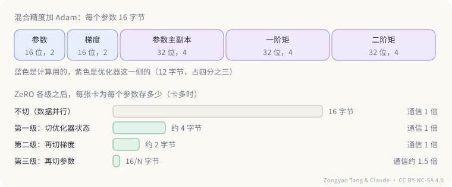

线索是：先算清楚训练时每个参数到底占多少显存，大头在哪 → DDP 里每张卡存的东西一模一样，ZeRO 把这份冗余分三级切掉 → FSDP 是 PyTorch 对最彻底那一级的实现，关键在于“什么时候把参数拼完整、什么时候放掉”的节奏。这一单元用到 6.1 的一个结论：all-reduce 可以拆成 reduce-scatter 和 all-gather 两半。
第 7 部分 · 分布式训练7.2 ZeRO 与 FSDP
这一单元回答模型大到一张卡放不下时，怎么办？
承接 7.1：DDP 里每张卡都存了一模一样的东西，这份冗余可以省掉。
讲解
1混合精度 + Adam：每个参数要占 16 字节
16 位的参数 2 字节、16 位的梯度 2 字节，再加上 fp32 的参数主副本 4 字节、Adam 的两份状态各 4 字节，一共 16 字节。一个 7B 的模型，光这些就要约 112 GB，还没算激活值。
把训练时和一个参数有关的所有东西列出来（ZeRO 论文的算法）：
内容 精度 字节 参数（前向和反向计算用） 16 位 2 梯度 16 位 2 参数的主副本（优化器更新用） 32 位 4 Adam 的一阶矩（动量） 32 位 4 Adam 的二阶矩 32 位 4 合计 16 字节。后三行是优化器这一侧的，共 12 字节，占了四分之三。
为什么优化器要用 32 位。 每一步的更新量相对于参数本身很小。用 16 位存参数，很多次小的更新会因为精度不够而直接丢失，累积起来训练就不对了。所以混合精度的通常做法是：计算用 16 位的副本（快，1.5 讲过），更新作用在 32 位的主副本上，Adam 的两份状态也用 32 位。
代入一个数。 7.5B 参数的模型：16 × 7.5×10⁹ = 120 GB。这还只是“模型状态”，没有算激活值。一张 80 GB 的卡放不下。
这个算法的用处。 遇到显存不够，先分清是哪一类：
- 模型状态（上面这 16 字节 × 参数量）：和 batch 大小无关，调小 batch 没用。要靠这一单元的办法。
- 激活值：和 batch 大小、序列长度成正比。调小 batch、用重算换显存有用。
- 临时缓冲区和碎片：和分配的模式有关（2.1）。
一个简单的判断方法：把 batch 减半，显存占用降了多少。几乎没降，大头就是模型状态。
打个比方像搬家时发现：家具本身不多，真正占地方的是各种备份和包装。
所以显存的大头不是参数本身，而是优化器状态；这就是 ZeRO 先从切分优化器状态开始的原因。
后面会用到 检查点里要存四样：模型、优化器、进度、随机状态- 16 字节里，哪些是每张卡必须自己留一份的，哪些不是？
2ZeRO：把冗余切开，每张卡只管 1/N
DDP 里每张卡存着一样的东西。ZeRO 第 1 级把优化器状态切成 N 份，每张卡只存一份；第 2 级再切梯度；第 3 级连参数也切开。每张卡的显存占用大约随卡数成反比下降。

上面是上一节的 16 字节，下面是三级各自切掉什么 ZeRO 的观察是：数据并行里，每张卡在一步训练中并不是每时每刻都需要全部的 16 字节。按“需要的时间有多短”从易到难切。
第一级：切优化器状态（12 字节那部分）。 优化器状态只在更新参数的那一刻用到。把参数分成 N 段，每张卡只负责更新其中一段，也就只需要存那一段的优化器状态。
- 显存：每个参数从 16 字节降到 4 + 12/N 字节，卡多时接近 4 字节，约为原来的四分之一。
- 通信：梯度照常同步。每张卡更新完自己那一段参数后，要把更新后的参数分发给大家，这是一次 all-gather。6.1 讲过，“reduce-scatter 梯度，再 all-gather 参数”的通信量和一次 all-reduce 相同，所以总通信量没变。
第二级：再切梯度。 既然每张卡只更新自己那一段，它也只需要那一段的梯度总和。梯度的同步从 all-reduce 改成 reduce-scatter，每张卡只留下自己那一段，别的段算完就可以丢掉。
- 显存：每个参数降到 2 + 14/N 字节，接近 2 字节，约为原来的八分之一。
- 通信：仍然和数据并行相同。
第三级：连参数也切。 平时每张卡只存 1/N 的参数。前向或反向算到需要某部分参数时，临时从其他卡把它收集过来（all-gather），用完就丢。
- 显存：每个参数降到 16/N 字节，随卡数成反比下降。理论上只要卡够多，多大的模型都放得下。
- 通信：前向要 all-gather 一遍参数，反向又要一遍，再加上梯度的 reduce-scatter。论文算出总量是数据并行的 1.5 倍。
级别 切分 每个参数约占 通信量 数据并行 无 16 字节 1 倍 第一级 优化器状态 4 字节 1 倍 第二级 再加梯度 2 字节 1 倍 第三级 再加参数 16/N 字节 1.5 倍 这是 0.1 里“用通信换存储”的典型：不存，用到时再从别处取。
怎么选。 前两级几乎是白拿的，通信没有增加。第三级用 1.5 倍的通信换来随卡数下降的显存，值不值取决于通信能不能藏在计算后面，这正是下一节 FSDP 要解决的工程问题。
打个比方像几个人合租：与其每人买一整套家具，不如每人买一件，需要时互相借用。
所以卡越多，能训练的模型越大；代价是通信：第 1、2 级的通信量和 DDP 相同，第 3 级大约是 DDP 的 1.5 倍。
出处ZeRO 论文ZeRO 论文 第 2 页 三级切分的概要ZeRO 论文 第 10 页 §5 切优化器状态与梯度ZeRO 论文 第 11 页 §5.3 切参数ZeRO 论文 第 14 页 §7 通信量分析：1.5 倍的来历- 第三级的想法简单，做起来有一个关键问题：参数什么时候收集、什么时候释放，才能既省显存又不拖慢训练。
3FSDP 的节奏：用到哪一层才把它拼完整，用完就放掉
平时每张卡只存自己那一份参数。前向算到某一层时，先 all-gather 拼出这一层的完整参数，算完立刻释放；反向时再拼一次，算出梯度后用 reduce-scatter 把梯度汇总并切回各自那一份。下一层的参数会提前预取。
FSDP 是 PyTorch 对 ZeRO 第三级的实现。它把模型分成若干个“单元”（通常一个 Transformer 层是一个单元），以单元为单位收集和释放参数。
一步训练的节奏（以其中一层为例）：
- 平时：每张卡只存这一层参数的 1/N。
- 前向到这一层之前：all-gather，拼出这一层的完整参数。
- 这一层的前向计算。
- 算完：释放刚拼出来的完整参数，只留自己那 1/N。
- 反向回到这一层之前：再 all-gather 一次。
- 这一层的反向计算，得到完整的梯度。
- reduce-scatter：梯度求和并切开，每张卡只留自己那 1/N；同时释放完整参数。
- 所有层做完后，每张卡用自己那一段梯度更新自己那一段参数。

同一层在前向和反向时各拼一次 于是显存的峰值 ≈ 自己那 1/N 的全部模型状态 + 正在使用的那一两层的完整参数 + 激活值。模型的总大小不再受单卡显存限制。
单元的粒度是一个权衡。 单元越小，同时“拼完整”的参数越少，显存峰值越低；但通信的次数越多，每次的数据越小，固定延迟的占比越高。把整个模型当成一个单元，就退化成了“前向前一次性拼出全部参数”，显存上没有任何好处。
怎么不拖慢训练。 每一层都要等一次 all-gather 才能开始算，如果老老实实地等，通信就完全串在了计算的路径上。FSDP 的办法是预取：
- 前向时，在计算第 k 层的同时，提前发起第 k+1 层的 all-gather。等第 k 层算完，下一层的参数多半已经到了。
- 反向时同理，提前收集下一个要用的层。这里有个难点：PyTorch 是即时执行的，FSDP 事先并不知道反向会按什么顺序经过各层。它的办法是记下前向时各层的执行顺序，把它倒过来，当作反向顺序的估计。
预取也不能太激进。一口气提前收集很多层，显存又涨上去了。所以 FSDP 有一个限流器，控制同时“在途”的完整参数的数量。
和 DDP 的对比。
DDP FSDP 每张卡存的模型状态 全部 1/N 每步的通信 梯度的 all-reduce 每层：两次 all-gather，一次 reduce-scatter 通信量 1 倍 约 1.5 倍 通信怎样和计算重叠 梯度分桶，和反向重叠 预取下一层的参数 适合 单卡放得下的模型 单卡放不下的模型 所以排查 FSDP 的性能时，看的东西和 DDP 类似但多一样：all-gather 有没有被预取藏住。时间线上如果每一层的计算前面都有一段在等 all-gather，就是预取没起作用或者通信太慢。
源码导读：FSDP 的收集和释放挂在哪里
PyTorch 里有两代 FSDP 的实现，读源码前先分清你用的是哪一个。路径是 PyTorch 2.x 的，以你手头的版本为准。
第一代：
torch/distributed/fsdp/，用法是FullyShardedDataParallel(model, ...)把模块包起来。FSDP 论文描述的是它。- 核心数据结构是
FlatParameter（_flat_param.py）：把一个单元里的所有参数张量拉平、拼接成一个一维的大张量，再切成 N 份。这样一个单元只需要一次 all-gather，而不是每个张量一次。读这个文件能看到“拼接、补齐、切分”是怎么做的。 - 时机挂在模块的钩子上（
_runtime_utils.py）：前向之前的钩子里收集参数（unshard），前向之后的钩子里释放（reshard），反向的钩子里收集参数、做 reduce-scatter。函数名里带pre_forward、post_forward、pre_backward、post_backward的就是这几处。 - 预取和限流的逻辑也在这个文件里，搜
prefetch。
第二代（常叫 FSDP2）：
torch/distributed/_composable/fsdp/，用法是fully_shard(module)。TorchTitan 用的是它。- 不再把参数拼成一个大张量，而是每个参数各自切分，用 PyTorch 的“分布式张量”（DTensor）表示。好处是每个参数保留了自己的身份，和其他并行方式（张量并行）更容易组合，显存的释放也更确定。
- 收集和释放的时机同样挂在模块的前向、反向钩子上，思路没变。
带着这几个问题读：
- 一个单元的 all-gather 是在哪条 CUDA stream 上发起的？它怎样做到不堵住计算？
- 释放完整参数后，那块显存马上还给分配器了吗？（这关系到 2.1 讲的显存缓存和碎片；论文专门讨论了这一点，也是限流器存在的原因。）
- 混合精度时，all-gather 传的是 32 位的主副本还是 16 位的副本？（传 16 位的可以让通信量减半。）
这份导读依据的是论文和对代码结构的了解，没有对照具体的 PyTorch 版本逐行核对。
打个比方像图书馆借书：要读哪一章才把那一章借来，读完马上归还，自己的书架上只放负责保管的那一部分。
所以显存峰值只取决于“自己那份 + 当前这一层的完整参数”；预取让通信和计算重叠，不至于拖慢训练。
出处PyTorch FSDP 论文FSDP 论文 第 3 页 图 1 一步训练里的收集与释放FSDP 论文 第 5 页 FlatParameter 与切分FSDP 论文 第 6 页 §3.3 重叠通信与计算FSDP 论文 第 7 页 反向预取与限流器
串起来
混合精度加 Adam 时，每个参数占 16 字节，其中 12 字节是优化器状态。ZeRO 把优化器状态、梯度、参数依次切成 N 份，每张卡只存一份，显存随卡数下降，通信量最多变成原来的 1.5 倍。FSDP 按层工作：用到哪一层才 all-gather 拼完整，用完就释放，梯度用 reduce-scatter 切回去；靠预取让这些通信和计算重叠。
考考自己
不看讲解，用自己的话讲一遍。
- 混合精度加 Adam 训练时，每个参数为什么要占 16 字节？其中最大的一块是什么？
- ZeRO 的三级分别切分什么？各自省多少显存、增加多少通信？
- FSDP 在一步训练里，对每一层做了哪些通信？它靠什么让这些通信不拖慢训练？
术语
- ZeRO
- 零冗余优化器
- sharding
- 分片
- optimizer state
- 优化器状态
- FSDP
- 全分片数据并行